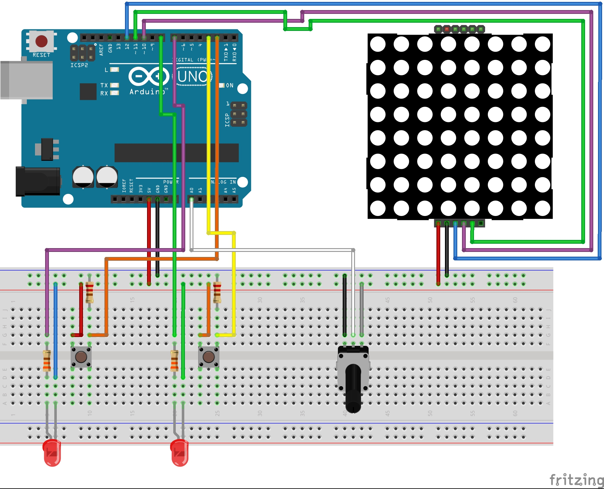

With this challenge, I took a deep dive into the world of wearables; a world which is expanding rapidly these days. Wearables are nothing new. For example, the first Calculator Watch was designed by Pulsar back in 1975! But with new tech come new products, such as smartwatches that are more and more commonly worn. The future of wearables looks very promising, as new applications keep popping up out of nowhere. I see wearables as additions to the human body. I believe they can make our day to day lives easier, more comfortable and provide us with information about our body. In the context of quantified self, wearables are the solution to self-tracking.
Research
Smart tattoos as a new way of communicating
We see tattoos everywhere. Whereas back in the day usually only prisoners and gang members would have tattoos, nowadays it’s not uncommon to have one or even multiple tattoos. Could a tattoo be used as a new way of communicating with one another, and how would that play out in real life?
Something that already exists are “soundwave tattoos”, which can be converted to sound through an app. In this particular case, the tattoo not only looks like a sound wave, but actually consists of something that can be heard.
With this in mind, the possibilities are endless. For example, one could create a smart tattoo with NFC function, for which a chip is no longer needed. Or perhaps some kind of altered QR-code tattoo, with which one can pay, somewhat like how the Alipay payment system from China works at the moment.
The Smart Tattoo could function as a way of payment, which makes it alot easier for the ‘wearer’, as no bank card or cash needs to be carried. The payment method would literally be something on your person all the time.
As far as smart tattoos go right now: the technology is still quite limited. They are experimenting with smart tattoos functioning through Bluetooth. The problem with the tattoos being applied to the skin is that they are only very temporarily currently. Microsoft Research states the following: “New research and testing will also inform the design of smart tattoo kits, which will empower anyone to design and build their own smart tattoo and will open the technology’s use and applications.” (source). Thus, the focus is primarily towards self-development and creation of the smart tattoos, rather than going to a tattoo shop.
You wear, eyewear
An application of wearable technology that I found particularly interesting and outright awesome, was the concept of smart contact lenses. Back in 2018, there was a breakthrough in the development of biosensing contact lenses. These contact lenses are capable of detecting glucose levels in patients with diabetes. If this would be introduced as an actual working product, it would mean a pain-free way for diabetics to check their glucose levels!
Put a ring on it
Wearables are more commonly being used as an on-person wireless payment method. The increasing popularity of contactless payment, usually through NFC chip, has created an entire new purpose for wearables. Dutch bank ABN Amro started supporting and offering wearables for contactless transactions a few years back. Smartwatches from brands such as Garmin are often equipped with NFC, and can therefore be used to complete transactions, without ever needing a debit or credit card. Also, K-rings, waterproof rings made of zirconia ceramic, were developed solely for the purpose of wearable payment method. Under the slogan 'wear your wallet', K-ring offers a variety of NFC equipped payment rings. ABN Amro was the first bank in the Netherlands to support payment through wearables on a larger scale, with more and more banks joining them since. I can't wait to see what we can pay with in 10 years time!
Tinkering
For tinkering in the Wearables challenge, I decided to focus on Arduino and explore its possibilities, to be able to make actual demos. Before I even started tinkering, I got some inspiration through Googling for Arduino wearables. Luckily, the Arduino website has a filter for this, which got me here. This webpage lists all of the user-uploaded Arduino projects tagged with 'Wearable'.
One ring to rule them all...
The first demo I created was for a smart-ring. This smart-ring can measure body temperature and amount of light. Both the input for body temperature and amount of light are wired to different colored LEDs as output. The smart-ring would be able to change color based on body temperature or amount of light. It would also be possible to hook up all kinds of different input sensors to make the smart-ring even smarter. For example, it would be possible to include a heart rate sensor, an LED display to be able to receive short messages, or GPS in case you lose your precious...
Here's the code I used to hook up the temperature and light sensors to the LEDs, and the actual outcome in Arduino.
For the second demo, I decided to expand upon Arduino workshop exercise D, the social distance indicator. In this exercise I was tasked to make a social distance indicator, using the Ultrasonic Proximity sensor (UPS). This sensor emits a pulse of ultrasonic sound, which upon reaching an object bounces back to the sensor. This data can then be translated to a unit of measure through a certain calculation involving the speed of sound. In the exercise, different coloured LED lights were to be added to this social distance indicator, actually indicating whether an object was too close or far enough from the sensor.
I expanded upon this workshop exercise by adding an output, the LED matrix.
The LED matrix is an 8 by 8 field of red LED lights. All 64 LEDs can be activated individually. I connected the LED matrix to work with the UPS in such a way that it alternates between displaying a checkmark and the text 'OK', if any objects are farther than 1.5m away from the sensor. If an object is closer to the sensor than the 1.5m social distance, it'll alternate between displaying a stop sign, an exclamation point and the text '1.5M'. You can see a video of this demo and the corresponding code below.
For the third demo, I added yet another sensor to the social distance indicator. In demo 2, the indicator used a UPS to calculate distance. Depending on that it will display either a warning or a praise. To also use sound in this indicator, I added a piezo speaker to the mix.
A piezo speaker can be used to produce a sound using the 'tone()' attribute in Arduino. In this demo, the speaker produces a beep when the distance from an object to the UPS is less than 1.5m. It does not produce a sound when an object is farther than 1.5m away. This could be expanded to a voice-over saying something like "Caution. Please keep 1.5 meters distance." Check out the video and corresponding code below! (Make sure to turn on your audio for this one, but turn it down!)
During the tinkering phase, I really enjoyed working with the 8x8 LED matrix. I wanted to explore its possibilities even further, so I chose to work with this output for my final product.

I started thinking what I wanted to create with the matrix. I soon thought of something that increases both safety and visibility of cyclists: a wearable indicator/bike light for cyclists. The indicator would be able to show whether a cyclist would go right or left, with the push of a button. I started to create the prototype with Arduino, and kept adding more and more different inputs and outputs in the process.
I started by connecting the LED matrix. I then added a button as input for the right indicator and created the arrow pattern to display on the matrix in the code. When that all worked out I added the left button and indicator. I continued by implementing the potentiometer to let the user change the speed of the indication arrows. Finally, I added LED lights which are on for as long as the button is pushed. You can see the Arduino setup in the image on the right.
You can view the process in the video below. I also included the corresponding code from Arduino. Please see the next section on this page for the showcase video, showing the finalized prototype.
Cycling is a very popular mode of transportation in the Netherlands. Some Dutch people even own multiple bikes, just for themselves. In winter, it can get quite dark rather early. Especially then are cyclists hard to spot for motorists. Therefore, cyclists are obliged to have lighting on their bikes. However, cyclists usually have no signal lights available to them. They usually just put their hand out to indicate they're crossing the street or turning in a certain direction. That's where my product comes in: both a cycle light and indicator in one!
As a wearable, the indicator can be implemented in a high visibility vest, which would be worn by the cyclist to increase their visibility even further. It could also be implemented as a projector mounted on the back of a bicycle, projecting the matrix output on the cyclist's back. Check out the prototype for the product in the video below!
Reflect
Wearables: the topic and its future
I enjoyed the subject, because I think the development and introduction of new types of wearables is interesting and has a promising future. As I mentioned in the research part of this challenge, I am particularly interested in the medical application for wearables. I believe there are far more applications for wearables than are on offer right now. The possibilities of wearables are almost endless and I strongly believe that wearable technology will help us humans become healthier and more conscious about our bodies.
My final product
My skills in Arduino are quite limited, and I did the best I could with the knowledge and tools I had at hand. I found it quite difficult to come up with ideas for wearables. I think the reason for that was that I could not visualize something I made with Arduino, with all its cables and somewhat large size, representing an actual functioning wearable. That is also partly why I chose to stick with Arduino. Furthermore, I was not familiar with any other types of wearable development software and/or hardware. I also wanted to show an actual physical prototype as final product, rather than just a bunch of code that would explain the concept but not actually show what the real-life prototype or product might look like. That being said, I am happy with how the prototype turned out. I got it to work exactly how I wanted it to, and can see this being a real thing in the near future.
Experience with wearables
Over the years I've owned multiple wearables myself. I bought my first smartwatch three years ago, a TomTom Spark. I've since switched to the Garmin Vívoactive, which I have for about a year now. Also, I tried on various Fitbit fitness trackers before. As for wearables not necessarily being on one's wrist, I have yet to try those out. As someone with glasses, I would very much like to try a pair of AR glasses such as Google Glass one day.